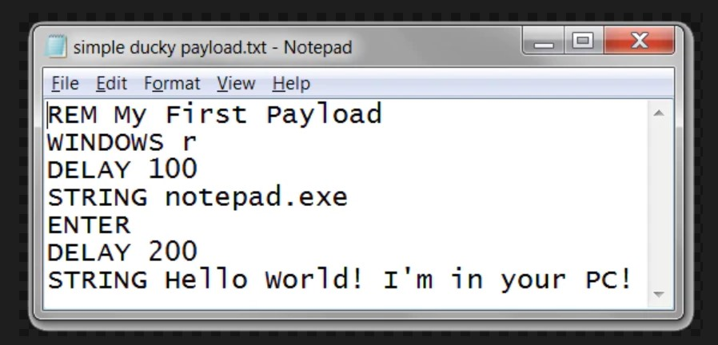
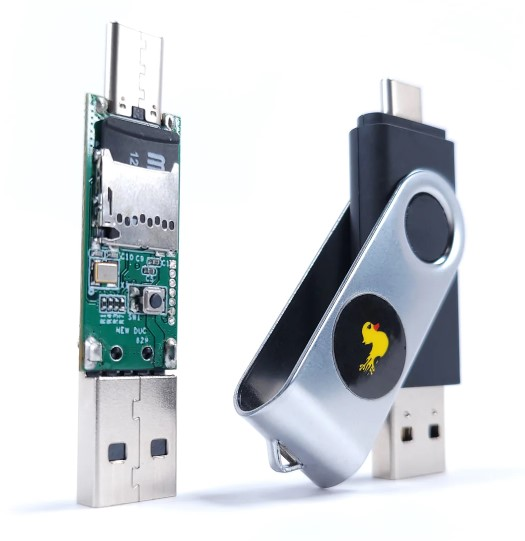

Hak5: Revolutionäre Tools für IT-Sicherheit
Hak5, ein renommierter Name in der IT-Sicherheitswelt, hat einige der innovativsten und zuverlässigsten Tools für Penetrationstests und IT-Sicherheitsprüfungen entwickelt. Von dem WiFi Pineapple, einem leistungsstarken Wireless-Auditing-Tool, bis hin zum LAN Turtle, einem kompakten Ethernet-Multitool, bietet Hak5 einzigartige Geräte an, die das Leben eines jeden IT-Sicherheitsfachmanns einfacher machen. In zukünftigen Blogbeiträgen werden wir uns genauer mit diesen Tools und ihrer Anwendung im IT-Sicherheitsbereich beschäftigen.
Ducky Scripts: Automatisierung leicht gemacht

Ein Ducky Script ist eine einfache Skriptsprache, die vom Hak5 USB Rubber Ducky, einem bekannten Penetrationstesting-Tool, verwendet wird. Ein Ducky Script ist im Grunde genommen eine automatisierte Tastatureingabe. Die Skripte sind einfach zu schreiben und ermöglichen es Benutzern, komplexe Aufgaben schnell und effizient zu automatisieren. Obwohl es auf den ersten Blick harmlos erscheinen mag, kann das Potenzial für Schaden und Missbrauch nicht unterschätzt werden. Daher ist es wichtig, diese Tools verantwortungsbewusst und ethisch zu verwenden.
Der USB Rubber Ducky: Mehr als nur ein USB-Stick

Auf den ersten Blick sieht der USB Rubber Ducky wie ein gewöhnlicher USB-Stick aus. Aber in Wirklichkeit ist er ein mächtiges Tool für Penetrationstests und Automatisierung. Ausgestattet mit einer einfach zu bedienenden Skriptsprache, ermöglicht der Rubber Ducky Benutzern, komplexe Tastatureingaben zu automatisieren und sie bei Anschluss an einen Computer auszuführen. Seine Fähigkeiten reichen von harmlosen Pranks bis hin zu ernsthaften Sicherheitstests und machen ihn zu einem unverzichtbaren Werkzeug in der IT-Sicherheitswelt.